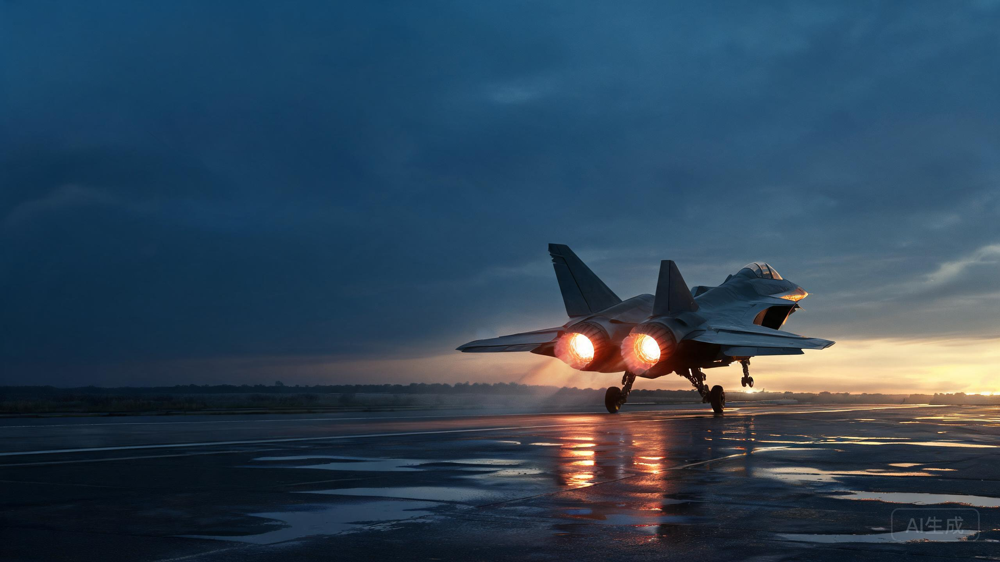
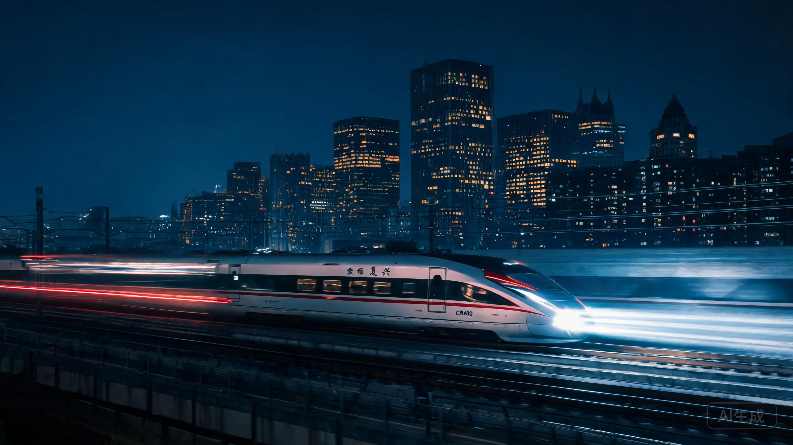
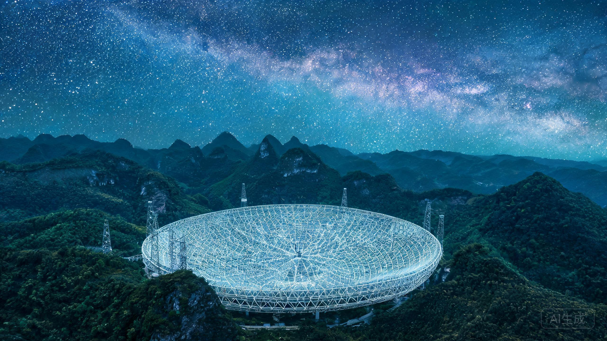
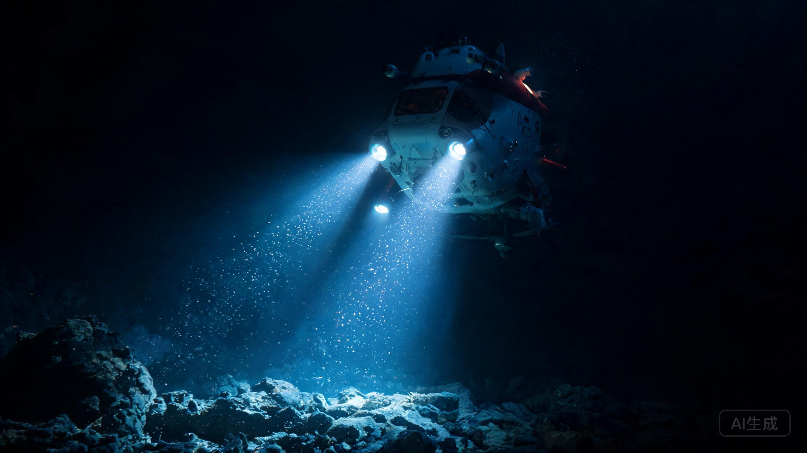

01 / AIR
歼-20 威龙
中国自主研制的第五代隐身战斗机，2011 年首飞，标志着航空工业跨入隐身时代。

02 / RAIL
复兴号动车组
CR400 系列中国标准动车组，运营时速 350 公里，实现牵引、制动、网络完全自主。

03 / SKY
中国天眼 FAST
500 米口径球面射电望远镜，落成于贵州喀斯特洼地，是目前世界最大单口径射电望远镜。

04 / DEEP
蛟龙号深潜器
中国首台自主设计、集成研制的载人深潜器，最大下潜深度 7062 米。
05 / SEA
爱达·魔都号
我国首艘国产大型邮轮，2024 年 1 月 1 日自上海首航，全长 323.6 米，填补了大型邮轮建造的空白。